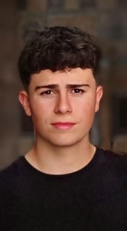

CFGS — Desenvolupament d’Aplicacions Web (DAW)
Grau superior centrat en desenvolupament multiplataforma, programació web client i servidor, disseny d’interfícies, desplegament i bases de dades, amb projectes integradors i pràctica constant.
Hola, sóc
Estudiant de Grau Superior en Desenvolupament d'Aplicacions Web
Soc una persona treballadora, motivada i amb ganes d’aprendre. Tinc experiència en el sector informàtic i creatiu: videojocs amb Unity i GDevelop, disseny web amb Figma i webs des de zero amb HTML i CSS, i també WordPress. Combino la part tècnica amb la creativa en cada projecte.

Resum professional alineat amb el meu currículum: formació, eines i àmbits on he treballat fins ara.
Soc una persona treballadora, motivada i amb ganes d’aprendre. Tinc experiència en diversos àmbits del sector informàtic i creatiu, incloent-hi la creació i disseny de videojocs amb Unity i GDevelop, el disseny web amb eines com Figma i la creació de pàgines web des de zero amb HTML i CSS, així com amb WordPress.
També compto amb coneixements bàsics en XML, JSON, Java i SQL, utilitzant entorns com IntelliJ IDEA i MySQL. En disseny gràfic i multimèdia he treballat amb Photoshop, Illustrator, After Effects, InDesign, Adobe Premiere, DaVinci Resolve, CapCut i Sony Vegas.
Actualment estic cursant el CFGS en Desenvolupament d’Aplicacions Web i m’interessa seguir creuant programació, disseny i projectes ben documentats.
Trajectòria formativa orientada al desenvolupament d’aplicacions web i les tecnologies que l’envolten.
Grau superior centrat en desenvolupament multiplataforma, programació web client i servidor, disseny d’interfícies, desplegament i bases de dades, amb projectes integradors i pràctica constant.
Formació en creativitat digital, videojocs, multimèdia i disseny interactiu — la base que ara complemento amb el cicle superior de desenvolupament web.
Etapa que em va introduir en l’organització acadèmica i en les assignatures fonamentals abans d’orientar-me cap als cicles formatius.
Eines i tecnologies que aplico als projectes acadèmics i personals.
Pàgines des de zero amb HTML i CSS, treball amb JavaScript segons el projecte, maquetació i WordPress quan toca publicar o prototipar ràpid.
Coneixements bàsics en Java, formats d’intercanvi i consultes SQL, amb entorns que faig servir a l’aula i en projectes personals.
Prototipat i petits jocs amb motors accessibles, equilibrant disseny, lògica i iteració durant el grau mitjà.
Maquetació, identitat visual i peça audiovisual: del vectorial al muntatge de vídeo en eines professionals i àgils.
Control de versions, editor habitual i desplegament senzill quan el projecte ho permet (per exemple web estàtica a GitHub Pages).
Aquests projectes reflecteixen la meva evolució entre la programació, el desenvolupament web, els videojocs i la comunicació visual.
De la lògica en Java i les bases de dades fins a la maquetació web, els motors de joc i el muntatge audiovisual: un recorregut variat i molt pràctic.
Aquest és el meu Free Project del cicle: un projecte intermodular basat en el desenvolupament d’un videojoc 2D de masmorres. El joc s’ha construït amb Java i Java Swing, i inclou moviment del personatge, exploració del mapa, enemics, objectes, monedes i integració amb MySQL per guardar dades de les partides i crear un rànquing. Aquest treball resumeix la meva part més tècnica i la capacitat de combinar programació, lògica, disseny i documentació en un sol producte.
Projecte acadèmic · dades esportives · organització i lògica
Treball entorn al món del futbol on he organitzat dades d’equips, partits, classificacions i jugadors. He treballat l’estructura de la informació, la presentació del contingut esportiu i la lògica necessària per mantenir coherència en les dades, amb proves quan el projecte ho requeria. És un exemple clar de capacitat d’organització, tractament de dades i desenvolupament funcional dins d’un context acadèmic.
Web orientada a servei · usabilitat
Pàgina web pensada per a un negoci o servei veterinari: estructura visual clara, presentació dels serveis i maquetació de continguts perquè la informació sigui fàcil de seguir. Va ser una oportunitat per practicar disseny web, usabilitat i organització visual com si es tractés d’un encàrrec proper a un client real.
Durant el cicle de Grau Mitjà en Gràfica Interactiva vaig desenvolupar prototips i petits jocs amb Unity i GDevelop, equilibrant la part creativa amb la tècnica per construir experiències visuals interactives.
Treballs d’edició i muntatge en context acadèmic i de pràctiques: composició visual, ritme i manera de presentar continguts amb eines d’edició professionals i accessibles.
Aquest mateix lloc resumeix el meu perfil, la formació, les competències i una selecció de projectes; és la peça que tanca el cercle entre el que he après i com m’explico com a estudiant de DAW.
Feina actual, pràctiques del cicle mitjà i formació complementària segons el meu CV.
Treball en equip en entorn de restauració: ritme de servei, responsabilitat i organització diària al costat de la formació en desenvolupament i disseny.
Durant les pràctiques em vaig dedicar a tasques de disseny gràfic i edició de vídeo per a l’associació, aplicant el que havia après en multimèdia i comunicació visual.
Formació en dinàmiques de grup i suport a activitats educatives i d’esplai, que reforça la meva comunicació i la responsabilitat amb infants i joves.
Dades de contacte i idiomes tal com consten al meu CV.
Pots escriure’m per correu o WhatsApp. Si tens perfil de GitHub o LinkedIn públics, pots afegir l’enllaç al codi quan vulguis.